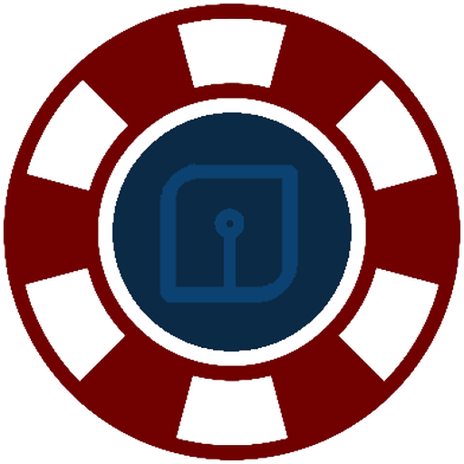

QSendrSend a file from your laptop to any phone: choose it, and the phone scans a QR code. No cable and no internet: same Wi-Fi or your phone's hotspot is enough.
Get it
Download qsendr.pyRuns on your laptop. Needs Python 3 and one small library, installed once:
py -m pip install segnoThen start it from the folder you saved it in:
py qsendr.pyWindows app (no Python needed)
One file, nothing to install, with an icon by the clock. Download QSendr.exe from the releases page. Windows 10 or 11.
The first time, Windows may say "Windows protected your PC" because the app isn't signed by a paid certificate. Click More info, then Run anyway.
Check it wasn't changed: its SHA-256 fingerprint (22 MB) is
86EAB93D468875F828CD2CB65C960491E3CDC0E0FA3BB08E37624EE31C4E23E7
In PowerShell, in your Downloads folder, this must print the same:
(Get-FileHash QSendr.exe).HashUse it
- Put the laptop and phone on the same Wi-Fi, or connect the laptop to the phone's hotspot.
- Open QSendr. Its page opens in your browser, and its icon (the red chip) sits by the clock.
- Click the box in the middle and choose a file (up to 100 MB), or drop one on it. Folders can't be shared.
- The phone scans the QR code with its camera. The download starts by itself. Any number of phones can scan it.
- Sharing stops after 10 minutes, or straight away with Close now. To quit, right-click the chip by the clock and choose Quit.
The Room, and Settings
The people icon at the top left opens the Room, a lunch room seen from above: for several files, or when phones need to send to the laptop or to each other. Phones join with a name and get their own shape and colour at the tables; you let them in. Nothing a phone sends is saved on the laptop unless you click Download, and the rest is deleted when the room closes.
The gear at the top right holds the app's settings: light or dark look, notifications, network help, a Wi-Fi QR, the activity list and Quit.
Right-click "Send to", and starting with Windows
Right-click the chip by the clock and tick Add to "Send to" menu. Then right-click any file in Explorer and choose Send to > QSendr. If QSendr is already open, the files join it.
Tick Start with Windows to keep QSendr one click away. It starts with the room closed, so nothing is open to the network until you open a room.
If the phone can't connect
- When Windows asks about the firewall the first time, click Allow.
- Check both devices are on the same network. Public Wi-Fi often blocks devices from seeing each other, so use your phone's hotspot instead.
- If the laptop has several networks, pick another under Address on the control page.
- On the laptop, open Phone can't connect?: it checks the network and Windows Firewall and says what to change.
- On iPhone, keep the screen on while sending: Safari pauses uploads when the screen locks or you switch apps. QSendr picks up where it stopped once the screen is back on.
- Laptop running its own hotspot? Use Wi-Fi QR for a phone so the phone joins it in one scan.
Staying safe
- Anyone who scans the main screen's QR gets that file, so show it only to the people you mean, and close it when they have it.
- In the Room, only phones you let in can see or send anything. For more, turn on the 4-digit PIN; 5 wrong tries lock the room.
- Program files (.exe, .bat, .msi and similar) are flagged, and QSendr never opens anything by itself.
- On shared or public Wi-Fi others could watch the traffic, so prefer your own phone's hotspot.